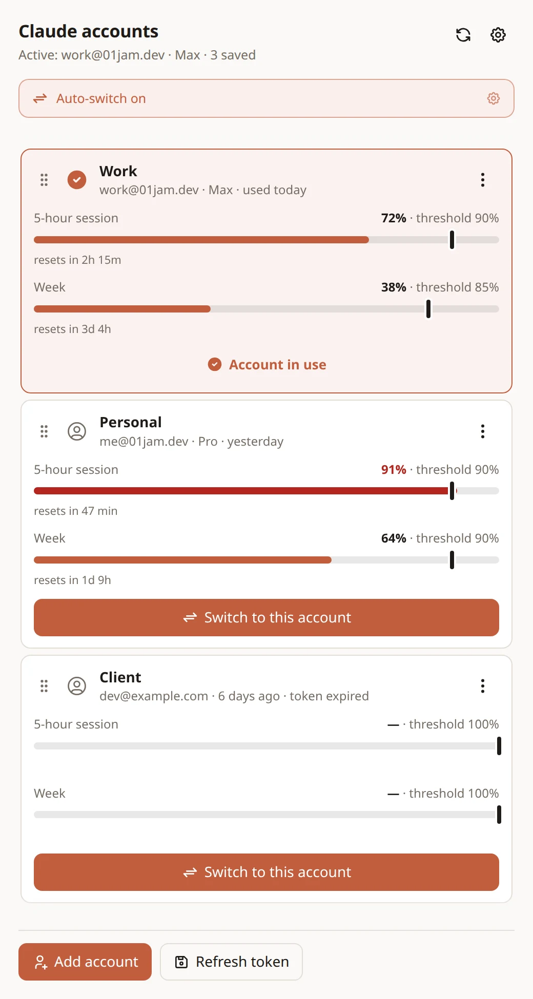
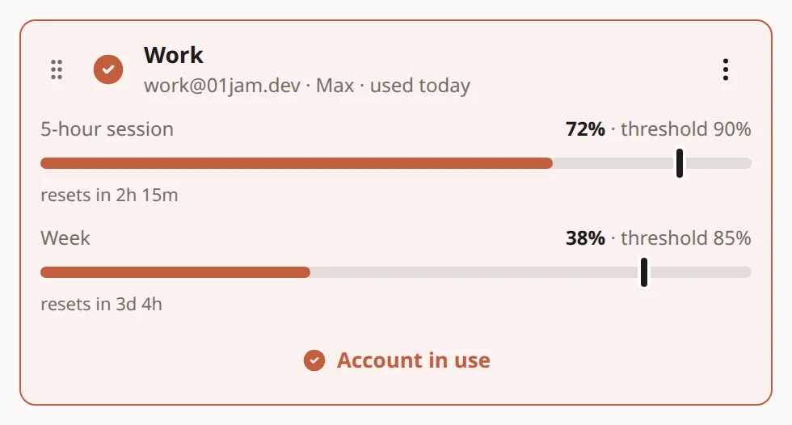
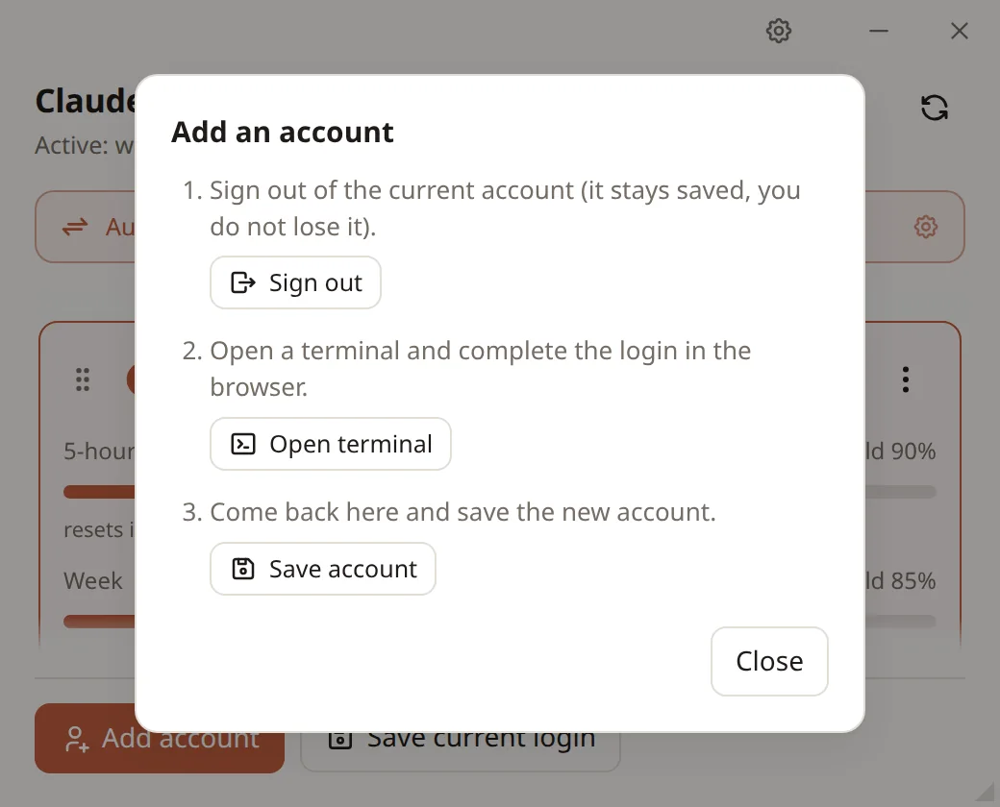
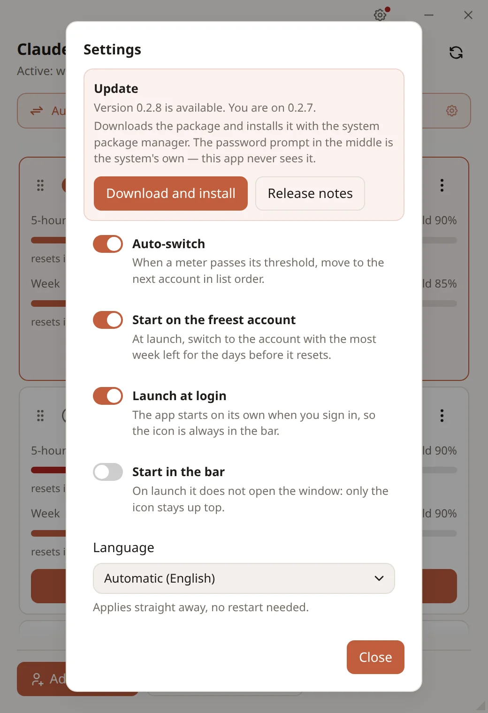

I have two Claude accounts and I keep signing in and out of Claude Code. Can this fix that?
That is the whole point. Claude Account Switcher keeps a saved copy of each login and puts the one you pick back in place — from its window, or from the icon in the top bar without leaving what you are doing.
One switch covers both places you use Claude Code: the CLI and the VSCode extension read the same login files, so the editor comes along with the terminal.

What does it actually touch on my machine?
Two files, and of the second one only the handful of keys that say who you are.
What gets copied
~/.claude/.credentials.jsonthe OAuth token, whole~/.claude.jsononly the account keys —oauthAccount,userID, …
Where it lands
~/.config/claude-switch/profiles/<id>/one folder per saved account~/.config/claude-switch/backups/a snapshot on every switch
The rest of ~/.claude.json — your projects, history and preferences — is left
exactly as it is, and every write is atomic, so an interrupted switch cannot leave you
with half a config.
One detail worth knowing: right before each switch the live credentials are copied back into the profile you are leaving. Claude Code rotates tokens while you work, and without that step you would be saving a token that has already moved on.
How do I see that an account is running out?
Every account carries two meters: the 5-hour session and the week. The filled part is what that window has spent; the marker on the bar is a threshold you can drag.

The numbers come from GET https://api.anthropic.com/api/oauth/usage, the same
endpoint Claude Code reads for its own /usage, called with that account's
token.
It is not a public API. Its shape can change without notice, so every field
is treated as optional: if one is missing the bar shows — and nothing
downstream fires. The endpoint is also rate limited, so requests are kept sparse — a
response stays good for 5 minutes, and after a 429 the app goes quiet for 10
minutes and keeps showing the last numbers it knows instead of blanking the bars.
Usage for the accounts that are not active is read with their stored token. If it expired, those two bars stay empty until you make the account active again — only Claude Code renews tokens, and this app does not do it on its behalf.
Can it switch by itself when one account runs dry?
That is what those thresholds are for. Drag one to say how full a window has to be before the account counts as spent — 100% by default, so out of the box nothing happens until you actually hit the limit.
With auto-switch on, the active account is checked every 5 minutes, and as soon as either counter reaches its own threshold the app moves to the next account in list order.
- A candidate already past its own thresholds is skipped.
- If nobody is available, the app says so and stays where it is.
- An account whose usage cannot be read — usually an expired token — is treated as usable. Better to try the switch than to sit still on a network error.
You can watch it happen without opening the window: the tray menu lists every account with both of its percentages. Within 5 points of a threshold a ⚠ appears next to the name, and the icon in the top bar picks up a warning badge.
How do I add the second account in the first place?
Claude Code owns the login flow, so the app works around it rather than through it — three steps, all in the Add account dialog:

And if you are already signed in the first time you open the app, you do not need any of that: a “Login not saved” banner offers to capture the account you are on with a single press.
Does it switch Claude Desktop too?
No — and that is a decision, not an oversight.
The switch covers the CLI and the VSCode extension, which share the two files above.
Claude Desktop is an Electron app that authenticates like a browser: its session is a
sessionKey cookie inside the Chromium profile in ~/.config/Claude/.
Nothing in common with the files this app moves, so it simply stays on whatever account
you signed it into.
It could be extended to cover it — the session is only a couple of hundred kilobytes of that profile — but it would mean closing Claude Desktop on every switch and chasing its updates. Not worth it, for now.
Anything I should know before handing it my logins?
Two things, plainly:
- Switch with Claude Code closed. A running session can rewrite
~/.claude.jsonunderneath you and undo the switch. - Tokens are stored in the clear, with
0600permissions — the same way Claude Code stores them itself. This is not a keyring, and it does not pretend to be one.
Can it just be there when I log in?
Settings has three switches for exactly that: launch at login, start in the bar (no window on startup, just the icon up top), and auto-switch itself. Closing the window leaves the app running in the tray; you quit it from the tray menu.
The interface speaks English and Italian, follows your system by default, and changes language on the spot without a restart.
